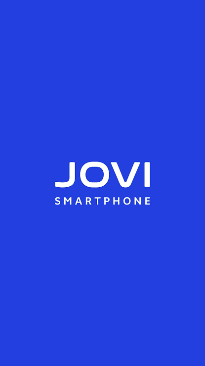
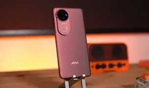
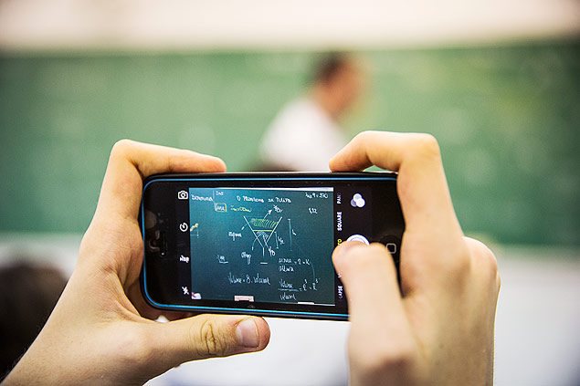

Seletor de imagens
Facilita a localização e seleção das imagens, permitindo que o usuário encontre rapidamente os arquivos que deseja organizar.
ORGANIZAÇÃO INTELIGENTE
A UX Na Lente facilita a seleção e organização das suas imagens, tornando mais simples encontrar e armazenar aquilo que realmente importa.
Conheça a solução

A SOLUÇÃO
A JOVI foi pensada para tornar o gerenciamento de imagens mais prático, ajudando o usuário desde a seleção das fotos até a organização dos arquivos.
Facilita a localização e seleção das imagens, permitindo que o usuário encontre rapidamente os arquivos que deseja organizar.
A UX Na Lente auxilia na organização das imagens, recomendando pastas adequadas para facilitar o armazenamento e o acesso aos arquivos.
A solução busca reduzir o trabalho manual e tornar o processo de organização mais intuitivo para o usuário.
PÚBLICO-ALVO
Estudantes são o principal público da JOVI. Entre fotos de slides, anotações, trabalhos e materiais de estudo, encontrar a imagem certa pode se tornar uma tarefa cansativa.

Organize imagens de aulas, anotações, trabalhos e materiais utilizados durante sua rotina acadêmica.

Encontre com mais facilidade as imagens importantes em meio a tantos arquivos armazenados.
UX Na Lente
Uma equipe dedicada a transformar uma necessidade do dia a dia em uma experiência mais simples e inteligente.